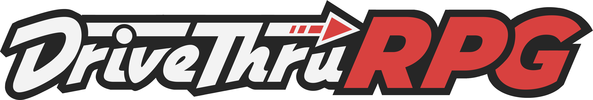
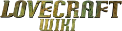
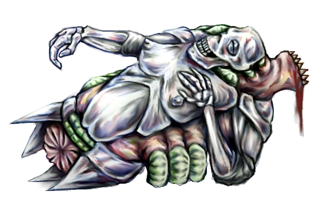

DESCARGASOTROS AUTORES |
  Mis redes sociales |

Bienvenidos a El País de Pnaklendorf, Los Mitos de Cthulhu de Ricardo Meyer Manríquez.
Homo sum, humani nihil a me alienum puto.
REFUGIO BIZARRO | ¿QUÉ ES PNAKLENDORF?
DESCARGASOTROS AUTORES |
  Mis redes sociales |